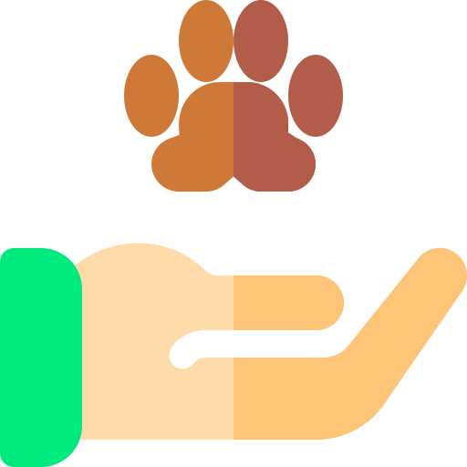
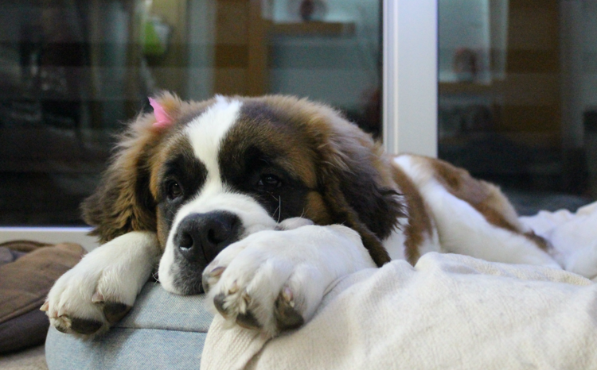

Aveiro, Portugal
Lola Ferro


Gender
Feminine
Breed
St. Bernard
Age
5 months
Family
Costa Ferro

Lola enjoys long naps on the beach (or any other place, really, she’s not very demanding on that matter). Often sleeps with her paws up so you can rub her belly. She’s friendly with other dogs and very patient with her brother Pady who is constantly biting her ears. She’s basically a furry, chubby princess.